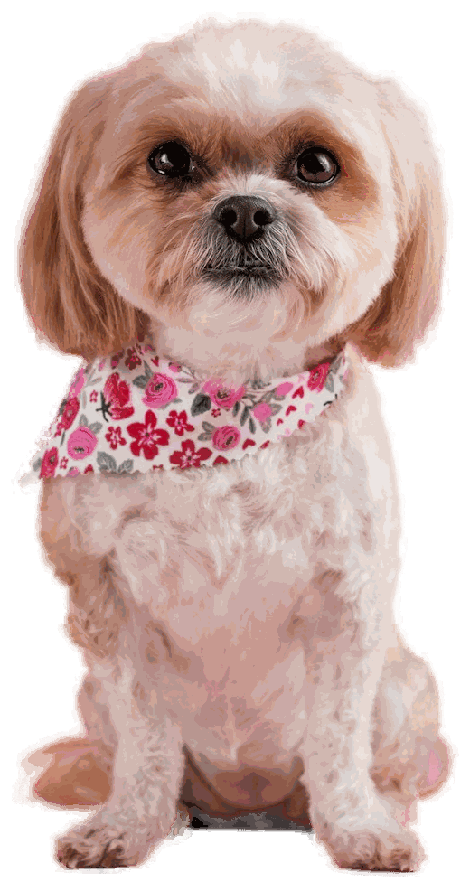
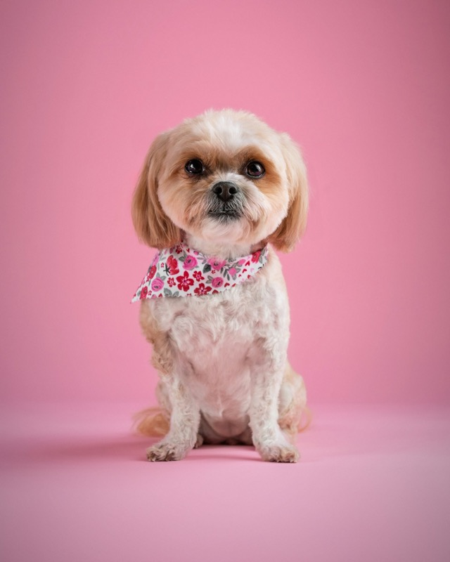
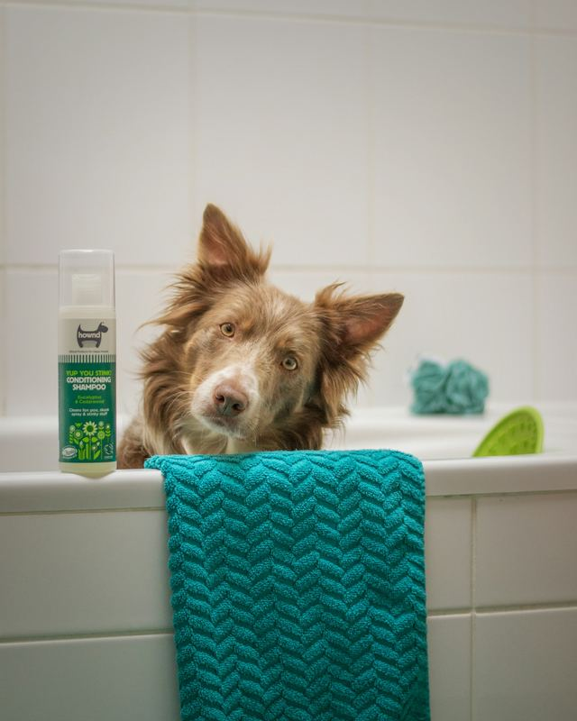

Suds & Snouts
Dog grooming in Naas, Co. Kildare. One dog in the salon at a time, gentle hands and very bubbly baths.
Open Tuesday to Saturday

One dog at a time. Always.
Suds & Snouts is a small, one-to-one dog grooming salon on the high street in Naas. Your dog gets the whole salon to themselves.
No cages, no queue of barking dogs and no rushing. We go at your dog's pace and stop for cuddles, water and a breather whenever they need one.
Peek through the front window and you'll see a groom happening right there. Nothing to hide, nothing hurried.
When your dog is ready we stand them on our pink backdrop, take their Snout Shot and text it to you. That's your cue to come and collect a very fluffy, very pleased pup.

Dog grooming services in Naas
Grooms
-
From €50, about 2 to 3 hours. Our most booked groom for doodles, poos and fluffy coats. Double shampoo, blow-dry and brush out, then a full clip and scissor to breed standard or a teddy trim. Nails, ears, hygiene tidy, a bandana and a Snout Shot.
-
From €42, about 1.5 hours. A tidy-up between full grooms. Everything in a Wash & Fluff plus a face, feet and bum trim, with no length off the body.
-
From €35, about 1 to 1.5 hours. For short coats and in-between grooms. Double shampoo and condition, warm blow-dry and brush out, nails, ears and a hygiene tidy.
-
€30, about 45 minutes. A gentle first groom for pups under 6 months: bath and dry, face, feet and nail tidy, and lots of treats and patience so they learn to love it.
-
€40 per hour. For terriers and wire coats. We remove the dead coat by hand to keep its natural texture and colour, with breaks built in for comfort.
Little extras
-
€10, no appointment. Thursday evenings from 17:30 to 19:30. Just drop in.
-
€6. A gentle brush with dog-safe toothpaste, added to any groom.
-
€5. A tear-stain friendly face wash that smells like blueberry muffins.
-
€8. Paw balm and a neat pad tidy for soft, happy feet.
-
€12 to €20. Lifts out loose undercoat, so less of it ends up on your sofa.
-
€10 per 15 minutes. Only ever done kindly, and always agreed with you before we start.
-
€5. A coloured bow or a coat of dog-safe nail varnish.
Coats we love
-
Every 4 to 8 weeks. A soft teddy trim or a neat short clip that's easy to brush at home.
-
Every 4 to 8 weeks. Gentle face and ear work and a fluffy, even finish.
-
Every 4 to 8 weeks. Brushed right down to the skin, then trimmed to a shape you'll love.
-
Every 4 to 6 weeks. Tidy faces, clear eyes and a coat that stays tangle-free.
-
Hand stripped. Wire coats kept crisp and true to the breed, priced by the hour.
-
From 12 to 16 weeks. Once vaccinations are done, a short Puppy Splash makes grooming something to look forward to.
-
Quiet Hour. The calmest slot of the week, with the lights low and no other dogs in.
Dog grooming prices
A small dog's Full Groom is €50
Wash, blow-dry, full clip and scissor, nails, ears, a bandana and a Snout Shot, in about 2 to 3 hours. Rebook every 4 to 6 weeks and the Suds Club takes 10% off, plus a free extra each visit.
Book this groom| Groom | Smallup to 10kg | Medium10 to 20kg | Large20 to 35kg | XL35kg and over |
|---|---|---|---|---|
| Full Groom | €50 | €60 | €75 | from €90 |
| Mini Groom | €42 | €50 | €60 | from €70 |
| Wash & Fluff | €35 | €45 | €55 | from €65 |
| Puppy Splash | €30 | €30 | €35 | €35 |
| Hand stripping | €40 per hour | |||
Small is a shih tzu, cavapoo or westie. Medium is a cockapoo or cocker spaniel. Large is a labradoodle or goldendoodle. Final price depends on coat condition and temperament, and anything extra is agreed with you first. Gift vouchers from €25.
Your visit, start to finish

Hello, and a treat. We greet your dog by name, check their coat and skin with you, and agree the look together from our board of popular trims.

The groom, at their pace. One dog on the table, no cages, warm water and plenty of bubbles. Breaks whenever they need one.

Snout Shot, then home. We text you a photo on our pink backdrop the moment they're ready. They leave with a bandana, a quick report card and their next visit booked.
Grooming for nervous dogs: the Quiet Hour
The first appointment every Tuesday and Wednesday is kept for nervous, elderly or reactive dogs.
The lights are low, there are no other dogs in, and your dog gets as many breaks as they need. If it all gets too much, we stop, and you only pay for the work done.

Fresh Snout Shots
Fluffy coats are our favourite. A few regulars, fresh from the tub.

Cockapoo puppy 
Doodle, teddy trim 
Shih tzu, Mini Groom 
Cavapoo 
Wire-haired terrier 
Bandana day 
On the pink backdrop 
Bath time


Book a dog groom online
Choose a groom, pick a time and tell us about your dog. We'll text you to confirm.
Thanks! Your booking request is in.
We'll text you shortly to confirm your appointment.
Good to know before you book
- Deposit
- New clients pay a €10 deposit, taken off the final price.
- Cancelling
- Give us 48 hours' notice or the deposit is kept. After a second no-show, future bookings are paid in advance.
- Matted coats
- Comfort comes first. We'll chat through the kindest option and agree any cost before we start.
- Health
- Dogs need up-to-date vaccinations and no fleas. If we find fleas, a flea treatment bath is €10.
- Collection
- Please collect within 30 minutes of our ready text. After that it's €5 per 15 minutes.
- Photos
- We only share your dog's Snout Shot online if you give us permission.
Questions owners ask
How much does dog grooming cost in Naas?
Grooms start at €30 for a Puppy Splash and €50 for a small dog's Full Groom. A medium Full Groom is €60 and a large is €75. See every price by size.
How long does a dog groom take?
A Puppy Splash takes about 45 minutes, a Wash & Fluff 1 to 1.5 hours, a Mini Groom about 1.5 hours and a Full Groom 2 to 3 hours. We text you the moment your dog is ready.
Can you groom nervous or reactive dogs?
Yes. Book our Quiet Hour, the first slot on Tuesdays and Wednesdays, and tell us about your dog when you book. The lights are low, no other dogs are in, and your dog gets all the breaks they need.
How often should I get my dog groomed?
Fluffy coats like cockapoos, cavapoos and doodles do best every 4 to 8 weeks. Short coats usually need a Wash & Fluff every 8 to 12 weeks. Rebook every 4 to 6 weeks and the Suds Club saves you 10%.
Does my dog need to be vaccinated?
Yes. Your dog needs to be up to date with vaccinations and free from fleas.
What happens if my dog's coat is matted?
We chat through the kindest option with you first. Any de-matting is €10 per 15 minutes and always agreed before we start.
When is my puppy's first groom?
Once your puppy has finished their vaccinations, usually from around 12 to 16 weeks. Our Puppy Splash is a short, gentle intro for pups under 6 months, so they learn grooming is fun.
Do you take walk-ins?
Walk-in nail clips are €10 on Thursday evenings from 17:30 to 19:30. All grooms are by appointment, so please book online or call.
Get in touch with our Naas salon
hello@Call or text
Salon
On the high street in Naas, Co. Kildare
Owners come to us from Naas, Sallins, Kill, Johnstown, Clane and Newbridge.
Opening hours
- Tuesday
- 8:30 to 17:30
- Wednesday
- 8:30 to 17:30
- Thursday
- 8:30 to 19:30
- Friday
- 8:30 to 17:30
- Saturday
- 9:00 to 16:00
- Sunday
- Closed
- Monday
- Closed